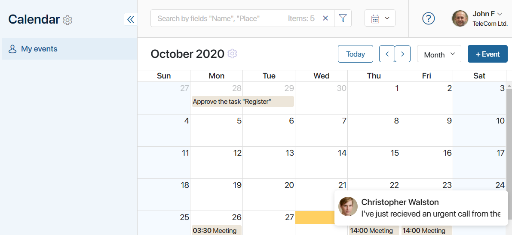

Both Chats and channels are used to facilitate internal communications in a company. However, there is a slight difference between them:
- Channels are primarily a tool for informing employees about important events in the company’s life.
- Chats are used for personal interaction between employees: to timely exchange important data, coordinate activities, and quickly discuss work issues.
Create a chat
There are several ways to start a conversation with a coworker in a chat.
- Use the search box. Go to the Messages workspace. In the search box for channels and chats, enter the first few letters of the coworker’s name and select a person from the drop-down list.
- Click on the user’s name. In the #Activity stream, a channel, or a task page, click on the person’s name and select the Send Message option.
All your personal chats are displayed in the Messages workspace. Your recent chats are shown right under the #Activity stream.
Sent messages are marked as follows:
 The message has been sent.
The message has been sent. The message has been read.
The message has been read.
In group chats a message is marked as read if at least one person has seen it.
Actions with messages in chats
Actions with messages are available in chats:
- Post a reaction. The selected emoji will be displayed below the message. The author of the comment will receive a push notification about your reaction.
- Copy. Save the message to the clipboard.
- Edit. Edit the message you have sent. The edited message is marked in the chat with the icon.
- Quote. Re-send and complete your message or reply to the message of the other person.
- Mark as Unread. Mark received messages unread so that you can return to the chat later. Such a chat will be marked with a red counter and you can easily find it when you need it.
- Forward. Share the message and comment on it. Select this action, then choose a chat and forward the message.
- Select. Select multiple messages to forward to another chat.
- View the list of reactions. Using the Reactions option, you can open the list of users who have reacted to the message.
Please note that message actions are not available in channels.
To send an edited, quoted, or forwarded message, press the Enter key or the Send button in the text entry field. To cancel the Edit, Forward, and Quote actions, click the cross icon.
You can go to the quoted message in the chat by clicking on it.
Share files
In chats and channels, you can share files: presentations, documents, or photos, as well as audio and video files.
To do this:
- Drag one or several files from a folder on your computer into the input box.
- Click on the paperclip icon in the right corner of the box and select the desired file in the opened window. To add more files, click the paperclip icon again in the upload window.
After you share a file, it will appear:
- Next to your message in the conversation.
- In the list of all the files you have shared in the chat. To see the file, click Attachments in the upper right corner of the chat.
Hover over the file to select one of the available actions:
- Download the file to your computer.
- Select a folder from the Files workspace and save a copy of the document in it.
 Copy a link to download the file.
Copy a link to download the file.
- Click on the blue area to open the file in viewing mode.
For more information about working with files in messages, see Share files in chats and channels.
New message notifications
With notifications, you will never miss important messages and will be able to timely resolve all the issues that might arise.
There are several ways to find out that someone wrote to you in the chat:
- A pop-up window appears in the lower right corner of the screen. Click on it to go to the chat.

- If the browser window with BRIX is minimized, a push notification will be displayed in the bottom right corner of the screen.
начало внимание
You will receive push notifications only if you allow the system to send them to you. For more information about push notifications, see Notifications.
конец внимание
- You will see a new message counter in:
- The Messages workspace, to the right of the name of a person who has sent you a message.
- On the main page on the envelope icon of the Messages workspace.
начало внимание
The counter next to the letter icon does not show how many new messages you have, but indicates the number of chats or channels with unread messages.
конец внимание
Silent mode
If you don’t want to receive notifications, simply switch the chat to silent mode. To do that, go to the chat window and click Notifications in the upper right corner.
Invite someone to join a chat
You can invite other people to a chat to discuss an issue together, coordinate plans, or share information. To do this, click Add participant in the upper right corner of the chat and select new participants in the window that opens. You can read more about chats for multiple people in Group chats.
Find a chat
To quickly find a chat, start typing the user's first or last name in the search box in the Messages workspace. A drop-down list with prompts will appear below the box. Just click on the name of the person to go to the chat.
To display a list of available live chats. This icon will display if live chats have been created in the system.
To show a list of all channels and chats available to you.
To display a list of available channels.
To find a particular message in a chat, go to the chat, and in the search bar enter the phrase or word you want to find. From the drop-down list, select Search in this chat.
Matches found will be highlighted in dark yellow. To go to the next match, use the navigation buttons that appear in the right corner of the search box.
Create an event in a chat
You can quickly create an event for all the chat participants. To do that, click +Event in the header.
In the opened window, fill in the event parameters. Please note that all participants of the chat or channel are automatically added to the Participants field.
When saved, the event will appear in the personal calendar of every participant and in the #Activity stream.
Hide a chat
If you no longer need a chat, you can remove it from your list of chats and channels. It will still remain available to all the other participants. As soon as someone sends a new message to the chat, it will re-appear in your list.
To hide a chat from the list, right-click on the name and select Hide Chat.
Add a chat to Favorites
If you have enabled object-based activity stream, you can mark a chat as important. To do this, right-click on it and select Add to Favorites.
To exclude a chat from favorites, click Delete from Favorites in its context menu.
Found a typo? Select it and press Ctrl+Enter to send us feedback